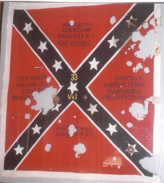
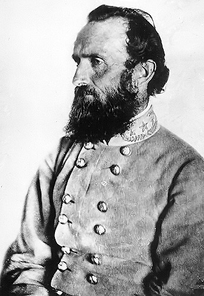
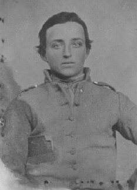

|
The 33rd Infantry Regiment of Virginia Volunteers, one of
the most celebrated military organizations in American
military history, serves as a prime example in supporting
James McPherson's conclusion that the Civil War soldiers
truly believed in and knew exactly what it was that they
were fighting for. The 33rd proves that the "themes for
liberty and republicanism formed the ideological core of the
cause for which the Civil War soldiers fought." The
following pages will demonstrate that it is because of their
deeply-felt and strongly-held ideological convictions that
made the soldiers of the 33rd to enlist, to fight, and to
continue to fight even when they knew there was no way they
could possibly win. Hence, examining the 33rd illustrates
that the South did not lose for any lack of idealism,
dedication to its cause or beliefs, or bravery on the
battlefield. The primary reason the Confederates did not
have more success on the battlefield is that they developed
only two talented army commanders - Thomas J. Jackson and
Robert E. Lee. Thus, the death of Jackson proves to be the
beginning of the end for this regiment as well as for the
rest of the Confederacy. Losses on the battlefield due to
|

Flag of the 33rd Virginia Infantry
|
incompetent military generals led to an overall decline in
morale, which eventually led to a decreased will to fight.
Along with this came the soldiers' loss of confidence in
their leaders, which led to severely undisciplined and
unmanageable regiments which aided in their failure.
Analyzing the regimental history of the 33rd Virginia
Infantry Regiment, which was at its peak under Jackson and
then began a steady downfall after his death, will
illustrate that the South's ultimate defeat was due to its
inadequate military commanders.
The best way to understand what drove these young men to
participate in the bloodiest and most dramatic conflict in
American history, is to become fully acquainted with the
hearts and minds of the members of the 33rd. For starters,
every single individual in this regiment was a volunteer.
These Virginians, who were from the northern end of the
Valley generally from the New Market and Martinsburg areas
of Virginia, enlisted to fight not because they had to, but
rather because they wanted to. Bounty and conscription
while may be motivations for some were not for this
Regiment. "Noble State pride and love of home" impelled the
Valley men to arms in 1861. This evidence is in Perfect
agreement with Wiley's argument that overall it was a much
more personal battle for the Confederacy than for the Union.
In addition to this, "Military analysts who have studied the
will of the armies to fight confirm this Southern
conviction: defense of homeland is one of the most
powerful combat motivations".
Also, over eighty percent of these soldiers were
literate. The soldiers of the 33rd read newspapers with
great interest, and formed debate societies. Further, not
only had a majority of the soldiers voted in the 1860
election, but also they continued to vote throughout the
war. Thus, these educated citizen-soldiers volunteered to
fight because they felt strongly about the issues of liberty
and independence from what they regard as a tyrannical
government.
The majority of the immigrants tended to be of Irish or
Scotch-Irish background. One might consider it ironic that
these men, who had traveled such a long distance to gain
freedom and prosperity in America, would join in a war
against the Union. But most of these men, isolated by the
two mountain ranges, had come to look upon Virginia, not the
US, as their nation. The generation old Virginians who
fought alongside these relatively new natives also felt that
Virginia was their country. As a result, these men set out
to defend their homes and homeland and, thus, cast their
lots with the new Confederacy. In fact, one entire company
of the 33rd (Co.E), popularly termed the "Emerald Guards"
was composed solely of Irish men from the New Market area.
Because of the particular affinity this Company had towards
liquor and brawling, it was the "problem child" of Jackson.
This may in part explain why most of this regiment's
chaplains were Presbyterian.
It is important to briefly note the impact slavery had on
these soldiers and how it motivated them to fight and to
continue to fight. Although the slaveholding planter class
formed a small minority of the population, it dominated
Southern politics and society. Slaves were the largest
single investment in the South, and the fear of slave unrest
ensured the loyalty of non-slaveholders to the economic and
social system. Slavery was not only an economic
institution, but it was also a human institution. It
separated the "degenerate" race from the "master" race. It
created a powerful bond among all white Southerners a bond
that served as a powerful motivator for many confederate
soldiers. In fact, there was not one African-American who
served as a slave in this regiment. Except for two
instances, not a single mention of African-Americans was
found in any of the diaries, letters, or memoirs of any of
the members in the entire Stonewall Brigade! This indicates
that there must have been some sort of strong general
consensus among the soldiers as well as the officers that
they did not want African-Americans to enter their regiments
even as cooks or slaves. This was purely a white man's war.
This evidence supports McPherson's argument that Herrenvolk
democracy was a powerful motivator for many Rebel soldiers.
Predominantly farmers by occupation, the average age of
the men in this regiment ranged from 18 to 25. Relatively
speaking, this was a fairly young unit. Thus, in addition
to the motivations presented earlier, it might be safe to
presume that a large number of these anxious inexperienced
youths enlisted in search of adventure and glory. This
idealized vision of romantic warfare blindly led many to the
battalions. However, the fact that they chose to stay after
their illusion had been shattered and they had been forced
to "see the elephant", goes to show that these soldiers were
here for a cause much deeper than becoming a romanticized
war hero. These men enlisted to fight, fought, and
continued to fight even when it became apparent that they
were going to lose; they strongly believed in what they were
fighting for - liberty, freedom from tyranny, and the
defense of their property and their homeland. Even during
the war, men such as Union officer Joshua Chamberlain could
not help but admire the dedication of these soldiers.
In April of 1861, the governor of Virginia John Letcher
called on state Militia volunteers to protect Virginia. In
response, many companies of infantry volunteers were
created. The 33rd Virginia originated from three such
companies - the Potomac Guard, Independent Grays, and
Hampshire Riflemen. In June, they witnessed action around
Romney and Winchester and were part of the 1st Brigade, Army
of the Shenandoah. Later, in July, they were added on to
Gen. Elzeys Brigade. On July 15, 1861, Col. Arthur C.
Cummings - who, in addition to three mentioned above,
recruited five more companies - was attached to the 1st
Brigade, 2nd Corps, of the Army of the Potomac. As a result
of this, the 1st Virginia Brigade was swelled to a strength
of 2,611 men. Soon after, this brigade became the first to
be plagued with lice, so it was quickly nicknamed "The Lousy
33rd."
Regardless of individual strengths, these five military
regiments and the Rockbridge Artillery thrown together could
be effective only if they served as a coherent, supporting
unit. An individual was needed to train and discipline this
raw and inexperienced group of boys and transform them into
a coherent unit. The part could not be performed any better
than it was by Brigade General Thomas J. Jackson. Jackson
turned out to be an outstanding leader, a skilled tactician,
and one of the ablest Confederate commanders second only to
the demigod Robert E. Lee. He was a very strict
disciplinarian, but he was not merciless. He drilled his
men hard, dusk to dawn, and almost immediately whipped them
into shape. Yet, he would never impose anything upon them
that he would not endure himself. Unlike most of the other
Generals, Jackson the General never placed himself above his
men. He made it a point to know his men inside out - their
weaknesses as well as their strengths- and plan accordingly.
He not only trained his soldiers to fight well (which is a
feat in itself), but he also trained his soldiers to think.
He not only told them, but also proved to them that might
does not necessarily make fight. Skill and wise strategies
could overcome even the greatest of numbers. Jackson gave
his men the hope that they held on to until 1865. By not
pampering them, teaching them to think under times of
intense pressure, obey orders, and showing them how to stand
up and fight for what they believed in, Jackson
single-handedly transformed these boy into men. Jackson
made the difference in these men as well as in the war.
A prime illustration of Jackson's military prowess and
skillful leadership is seen in the actions of prodigy Col.
Arthur C. Cummings at the Battle of First Manassas. Fought
on July 21, 1861, this was the first major battle of the
33rd Regiment. The Valley Men (5 regiments including the
33rd) were rushing to reinforce Gen. Beauregard's Army of
the Potomac in the Centreviffe-Manassas Junction area which
had been heavily attacked by Yankee forces. Entering a
battle for the first time, the boys of the 33rd were
overwhelmed with excitement, anxiety and fear. However,
soon the long march to the junction took its toll on the men
as exhaustion made its way to the ablest of men. Jackson
pushed on until he saw that his army could go no further. He
knew that his raw troops were terribly tired and that attack
by the federals would be highly unlikely. Jackson used
logic and wisdom not paranoia and power (as some generals
do), to make his keen decisions. Hence, he decided that he
would allow, even let, the guards go to sleep that night as
he himself acted as the solitary guard throughout the night.
By dawn, the troops had caught up on much-needed sleep and
were ready to fight. The 33rd, being the newest addition,
had not had much time to train with Jackson; fear embraced
the entire regiment. One member of the 33rd was so
desperate to avoid battle that he tried to shoot off his
toe. Ms poor aim caused him to blow off half of his foot.
Another soldier from the 33rd desperately cried out, "Good
Lord! What have I done that the devil should come after
me?"
The events that follow in this battle remind me of the
evolution of Henry Fleming in The Red Badge of Courage.
Henry's initial reaction to war is to run away from the
battle lines, very similar to the 33rd soldier who tries to
avoid battle by shooting his own foot. This is a crucial
step in their growth process because it illustrates that
they no longer believe that they are invincible. They have
"seen the elephant" and their romantic vision of war has
been replaced by a tragically realistic vision one. However,
it is only when Hem-y is struck on the head and faced with
the actual prospect of dying, that he is forced to confront
his fears. Similarly, it is only when the 33rd is placed in
the left flank under a shower of federal bullets, that each
soldier of the 33rd is confronted with the actual prospect
of dying and is thus forced to face their fears. At this
point, Henry as well as the 33rd soldier, cannot turn away
from what is inside of them (fear), but they must each come
to terms with it. Through time and experience, Henry has
overcome not fear, but its control of him. Thus, Henry
Fleming, like the average soldier, is able to stay and fight
because he has learned how to function and fight in spite of
fear. This is exactly the same transformation in attitude
that takes place in the soldiers of the 33rd. As Col.
Cummings bellowed "CHARGE!", without being given any orders
to, each and every single soldier in the regiment broke away
from his position and made a bold thrust over the Crest of
Henry House Hill to attack the federals, who had become
|

"Stonewall" Jackson, under whose command
the 33rd Virginia served until Jackson's death in 1863
|
scarcely visible in the thick fog. This infantry conveyed a
sweeping fire into the Federal guns making them ineffective.
Although forced back, the 33rd turned the tide of the
battle. Federal morale plunged and another charge, this
time by the entire brigade, repelled the Union troops. The
33rd was instrumental in giving the Confederates its victory
at the Battle of First Manassas. In Col. Cummings' account
of this battle, published in the Southern Historical Society
Papers, he states:
"A more gallant charge is rarely made than was made by
the Thirty-Third. The men moved off with the greatest
alacrity, killed and drove off gunners, shot down their
artillery horses and captured the battery of artillery ...
this was the first check the enemy had received up to that
time."
It is here that Jackson and his men earned their nickname
and etched their names in history. The Sept. 13,1862, issue
of The Southern Illustrated News told of how General Bee
christened Jackson "Stonewall" at the Battle of First
Manassas.
"[Gen. Bee] rode up to General Jackson, and said,
'General, they are beating us back.' The reply was, 'Sir, we
will give them the bayonet.' Bee immediately rallied the
remnant of his brigade, and his last words to them were:
'There is Jackson standing like a stone wall. Let us
determine to die here, and we will conquer. Follow me!...
Jackson did more than gain a sobriquet at Manassas. He
exhibited exceptional staunchness as well as leadership of
great quality. He chose a good defensive spot at the
beginning of a reverse slope, with his flanks protected by
woods and Stuart's cavalry for extra protection of his left.
"Stonewall" lived up to his reputation. He became as
reliable and sturdy as a stone wall. He did not lose his
cool under pressure, nor did he cower behind his men to
avoid being killed. No, Gen. Jackson stood rigid and tall,
like a stone- wall. He was a source of inspiration not only
to the men of the 33rd, but to all who had the good fortune
of seeing him. At First Manassas, the men were nearly
starved, but fought with desperation. "Whatever discontent
may be felt at times... the 'long roll' has only to be
beaten - they have only to see the man in the old faded
uniform [Jackson] appear, and hunger, cold, fatigue are
forgotten. The Old Brigade is ready." The men of the 33rd
fought hard for Jackson because he fought to win. A tie or
semi-victory was never enough. According to Stonewall,
victory must be absolute and complete. The regiments
devotion to him increased as he led them from one victory to
another. Like Henry Fleming, the 33rd was further motivated
to fight when the group was victorious. Jackson's bravery,
strength and resoluteness, along with the fame to which he
led them gave the men a pride that surpassed that of all
other units in the Confederate army noted for valor.
It is important to note that the victory at Manassas was
costly to the 33rd as well as to the entire Stonewall
Brigade. Out of the 2,600 men engaged, 111 had died and 373
were wounded and missing. From the 33rd alone, 45 men were
killed and 101 wounded. In the 33rd, Holmes Conrad, Jr.,
his brother Tucker and, their cousin, Peyton Harrison were
all found lying side by side on the hillside. The 33rd -
along with many other regiments in the Stonewall Brigade -
was comprised of many relatives- thus, it became known as a
"cousinwealth." Despite these losses, the morale of the
regiment was higher than it would ever again be. As a
result of his incredible leadership, on Oct. 13,196 1,
Jackson received a promotion to Major General and was
ordered to take command of the Valley District at
Winchester. It was very difficult saying farewell to the
leader who had made this regiment. Soon after, on November
7, Jackson - in need of well- trained troops - sent for his
Old Brigade to come and serve in the Valley District of Gen.
Johnston's command, where it became known as the Valley
Army. The Stonewall Brigade would be under Jackson's
general command until his death.
Jackson assigned Richard B. Garnett as Brigade General to
the Old Brigade. Contrary to Jackson, Garnett displayed a
major fault: he pampered his soldiers. He oftentimes
bypassed Jackson's orders to "soften" things up for his
brigade. Garnett, much to Jackson's disapproval, often
tended to underestimate the ability and strength of his
brigade. Where Jackson would have pushed on, Garnett
stopped. Unlike Jackson, Garnett did not maximize the
potential out of his unit. This took away from the strength
of the brigade and also from the army as a whole. A prime
example of this can be seen during the winter march to
Romney in 1861, when Garnett, disturbed by his men's
suffering, dismissed Jackson's orders and allowed the
regiments to cook and eat. Facing an enraged Jackson,
Garnett justified his actions by stating," It is impossible
for the men to march further without food." Jackson,
depicting his impression of this Brigade, responded," I have
never found anything impossible with this brigade!" It is
this lack of firm discipline that takes root in Garnett and
goes unchecked after Jackson's death which causes the North
to win.
ON March 23, the 33rd rushed to come to the aid of
Johnston. The fight began in Kernstown. From the entire
Stonewall Brigade, the 4th and the 33rd engaged in the most
fighting. The 33rd Reg. began to give way and broke-up into
smaller units. Seeing this, once again, Garnett decided to
overlook Jackson's orders and commanded his Brigade to
retire. Garnett gave the order to retire, when he should
have encouraged his men to hold their positions. The
reserves Jackson arranged did manage to successfully delay
the enemy after the front collapsed. If Garnett had stayed
until they got there, the Rebels had a good chance of
holding on until nightfall and then retiring with
significantly less losses. Garnett had pampered the
Stonewall Brigade over the past months, and now he was to
blame for the army's failure. Jackson hotly stated of him,
"I regard Gen. Garnett as so incompetent a Brigade commander
that instead of building up a Brigade, a good one, if turned
over to him, would actually deteriorate under his command."
As a result of Garnett's disobedience, Jackson relieved him
from his post and replaced him with Sydney Winder. Kernstown
took 25% casualties from the Brigade. The 33rd went into the
Battle of Kernstown with 275 men and lost 59. Yet even in
defeat, the incredible General Jackson had gained valuable
military advantages for Virginia. Jackson had struck a very
hard blow to the confederates. This battle would delay and
perhaps prevent additional enemy departures from the
Shenandoah. History would prove Jackson's estimate of the
situation to be correct.
A military hierarchy must react severely to Garnett's
disobedience. This is the nature of any system dependent on
hierarchy. Jackson was correct in not overlooking this
dissension within the Confederate ranks, for it plays a
major role in weakening the army. Jackson's greatness as a
leader is compromised because his orders are not being
carried down and implemented. Internal disunity within the
ranks can have disastrous effects. The Stonewall Brigade
would see other days as hopeless as Kernstown, but the
legacy of Garnett's removal ensured the army that as long as
Jackson was in command no one would dare consider retreat.
This action by Jackson made explicit what he demanded on the
battlefield.
In Winder, we see the extreme opposite of Garnett. He
quickly became very unpopular amongst his men because of his
ruthless disciplinarian tactics. John 0. Casler of the
33rd, whose irreverent memoir won him immortality of all
sorts, stated that Winder was "spotted by some [of the men
for being] very severe and very tyrannical" and would not
survive friendly action in the next battle even if the feds
missed him.
At Winchester, Jackson orders the newly elected Col. of
the 33rd, John Neff, to charge his 150 men. Victory comes
to the Confederates, yet once again it is a costly victory.
Jackson loses four hundred men of which 37 were from the
Valley. On June 9, the 33rd participates in another costly
battle at Port Republic. Here, the 33rd is held on reserve,
they were placed on picket duty. Due to a confusion in the
orders, they were not able to reach the field in time to
assist their sister regiments. The Brigade was losing, yet,
it was further hampered by the absence of the 33rd. Hence,
it began to retreat. Winder's universal unpopularity leads
to his ineptness as a leader, when he is unable to keep his
Brigade at the lines and they begin to retreat. Jackson
aides up and yells that "The Stonewall Brigade never
retreats! Follow me!" Just then the 33rd shows up, led by
Col. Neff, who had been stalled for hours without
instructions. Once again, Jackson's never ending desire for
victory and the confidence the soldiers have in Jackson
cause them to follow him in their time of despair. And they
are victorious. Jackson's 16,000 men defeated 60,000 troops
- proving that the quality of leadership, not the quantity
of men, determines victory. In June of 1862, Jackson's First
Valley campaign came to an end.
It is not until one year later on the fatal plains of
Chancellorsville, that the tide began to turn for the 33rd
as it experiences its most devastating loss - the death of
Gen. Jackson. In no other battle of the war did this unit
suffer as many casualties - 493 casualties including 60 in
the 33rd. Douglass Southwall Freeman stated that the
Stonewall Brigade "never was itself in full might after this
battle." It was never able to recover the loss of Gen.
Jackson. John Casler writes," . . . today I witnessed the
most horrible sight my eyes ever beheld. "
Chancellorsville, marks the beginning of the end for this
regiment. On his deathbed Jackson is noted to have said,
The name 'Stonewall' ought to be attached wholly to the men
of the Brigade and not to me; for it was their steadfast
heroism which had earned it at First Manassas."
It was a small consolation prize to the unit that on May
30, 1863, the CSA War Department officially accepted the
appointment "Stonewall Brigade" to the 1st Virginia Infantry
Brigade. It became the only unit in the entire army to have
an officially sanctioned nickname.
The impact of the loss of General Jackson was never felt
as deeply as it was two months later on the great plains of
Gettysburg. The Confederate loss at this decisive battle
was due to the ineptness of the generals. The skilled
strategist was no longer alive to check the actions of the
commanders. As a member of Jackson's Brigade stated
bluntly:
"The plain truth and incontestable solution of the matter is
this: Lee blundered; Stuart blundered; Longstreet, Ewell and
Pickett blundered. The whole campaign was a blunder."
General Richard S. Ewell had replaced Jackson. On July
1st, instead of going into action in true "Jackson fashion",
he ordered his troops to bivouac. The men were filled with
discontent at his decision. A member from the Brigade
protested, "Jackson would have kept us going until we
reached the heights." Many historians (including me) believe
that Ewell wasted a terrific opportunity to win a decisive
victory by which the central point of the Federal line might
have been caught offhand. Also, had Jackson been alive I
firmly believe that, in accordance with his past actions, he
would not have stopped at the foot of cemetery Hill but
would have continued to pursue the retreating Northern
soldiers and conquered the embattled heights. Mr. Sandie
Pendelton, who served as adjunct to both Jackson and Ewell,
is known to have said on the eve of July 2, "Oh, for the
presence and inspiration of Old Jack for just one hour."
On July 2,1863, Ewell's Brigade was ordered to join
Johnson's division in the battles for Culp's Hill. This
long battle left the Stonewall Brigade with massive losses
and nothing to show for it. Instead of launching an attack
all along the eastern face of the Hill, Johnson sent his
line in an irregular order- one brigade followed by another.
Then he stopped the assault because of darkness and lack of
knowledge of the terrain. As one Confederate soldier aptly
wrote, " It was the case of the wrong man in the wrong
place." Gen.Walker, who had replaced Winder as Brigade
General, ordered his men to retreat saying that, "it was a
useless sacrifice of life to keep them longer under so
galling a fire." If Stonewall were alive, he undoubtedly
would have persisted and probably won the fight regardless
of all the opposition and difficulty that had to be faced.
Successful battles had been fought and won against greater
odds, in point of mere numbers - i.e., at Antietam and
Chancellorsville. But at Gettysburg we were short just one
man - he who had been dead just two months and his name was
"Stonewall" Jackson.
The next major battle that the 33rd participated in was
at Spotsylvania on May 9, 1864. Here, once again, they
proved that without Gen. Jackson, an all-out victory could
not be gained. The highly famed Stonewall Brigade whose
spirit had been buried a year earlier with their General,
officially ceased to exist after this battle. During this
battle the Stonewall Brigade occupied the most critical
point along the Confederate line. As several units
shattered and fell back, the 33rd was trapped. It, along
with the rest of the Stonewall Brigade, was struck in front,
side and rear. The effects of Jackson's immortal leadership
were seen as the Stonewall Brigade stood firm while hundreds
of tom and demoralized men swept through them on their way
to the rear. These retreating men were further encouraged to
run when they saw their general (Johnson) being captured by
the Yankees after he idiotically rushed into the midst of
the battle-ground and started swatting at the Yankees with a
hickory cane. Yet, the Stonewall Brigade fought on even
after it lost its leader, Gen. Walker, as well as half of
the unit's commanders. As Lieutenant Dozle of the 33rd
stated, "All the human courage and endurance would effect
was done by these men on this frightful morning, but all was
of no avail." Thus, it was only when it became apparent that
the men of the 33rd could do no more, that they "had to run
for it" and join the second line of battle held by the
second Virginia. Although this second line was finally
secured, it was too late for the Old Brigade.
Prior to Spotsylvania, the entire division had numbered
6,800 men. Now, not enough men were left to form a brigade.
The Stonewall Brigade had less than 200 members, no
commanders, and only two of its five regiments officers. The
33rd was composed of only one captain and three privates.
Thus on May 14, 1864, the shattered Stonewall Brigade and
what little was left of Stuart's and Jones' Brigades were
combined into a single unit. The small consolation that the
Stonewall Brigade received was that their last commander
came from the ranks of the Stonewall Brigade, William Terry.
This allowed the Stonewall Brigade to retain some of its
identity.
In August of 1864, morale was at an all time low in the
Stonewall Brigade. These experienced soldiers who had
fought under the greatest of Generals were devastated in
having to follow the orders of inept commanders that knew
less than they. The stark contrast of these generals was
extremely evident to these men who had once been under the
personal leadership of Stonewall. Soon to follow the loss
of morale, came the loss of the desire to stay and fight.
|

A soldier, name unknown, from Company H of the
33rd Virginia Infantry
|
The incompetency of the generals soon took its toll on the
Stonewall Brigade. Its once fervent desire to win at all
costs was replaced by an attitude of utter despair as these
men were forced to fight under unfit commanders. A Rebel
noted in his diary," Alas! There is very little left of
that once splendid body of men." The only reason these men
stayed in the battle lines is probably because the will to
never give up and to always obey a superior's orders had
been so deeply embedded in them by their original leader
that if these men left, it would go against everything they
stood for.
Thus in August of 1864, painstakingly the men of the 33rd
watched as General Early fell victim to false rumors that
Grant's army was moving quickly to Washington. They
reluctantly followed Gen. Early, who basing his facts on
circumstantial evidence ordered the Rebels to retreat. As
John Opie a member of the Stonewall Brigade bitterly noted,"
Early lost the golden opportunity afforded him of
immortalizing himself by capturing the capitol of the
nation; but he, himself, was the only man in that army who
believes it impossible of accomplishment." A historian -
Hunter - noticing the decline in morale stated, "From that
day the grim veterans fought well, but never with dash, and
&m determination to do or die, the spirit which had
heretofore made them victorious on a bloody field." By this
time there was a total of 45 men in the Stonewall Brigade
and the 33rd was down to one man who was on sick leave. Not
long after, Gen. Sheridan struck Early's dissipated brigades
and the Stonewall Brigade lost severely. The Stonewall
Brigade held Gen. Early solely responsible for their
misfortunes. "The Corps never had any confidence in him
afterwards, and he could never do much with them." These men
who in a heartbeat would follow Gen. Jackson blindfolded
into the jaws of a lion, would not obey the orders of their
General commander. General Early lacked everything that
Jackson had. He was a pathetic leader. Even when success
was just an in inch away, he somehow managed to jumble it up
and end in defeat. A prime example of this would be the
episode at Ceder Creek on Oct. 19, 1864. A successful
Confederate surprise attack was short lived because of Gen.
Early's inability to decide whether to move in or retire.
His indecision resulted in him doing nothing and allowing
the federals to regroup and counterattack. In addition to
this, the 33rd as well as other hungry Rebels who had little
if any respect or confidence towards their commander,
ignored their commander's orders and ran to grab any food
they could find. Contrary to the First, the Second Valley
Campaign due to the ineptness of its leaders is aptly
classified by a 33rd soldier as being a period of "defeat
and disaster." The once piercing sound of the Rebel Yell,
which was first heard and termed under Gen. Jackson at First
Manassas, was never heard again.
The road for the 33rd finally led to Appomatox. In a
gesture indicating their legend and sacrifices, the
Stonewall Brigade was asked to lead the final march of the
Army of North Virginia. A total of 2l0 men composed the 5
regiments of the Stonewall Brigade. The 33rd led by Captain
Henry A. Herrell had less than 20 men left in its ranks. The
Stonewall Brigade proudly accepted this final call of duty.
They did this not so much for themselves as for their former
leader who had made them what they were - Gen. Thomas J.
Jackson.
As the regimental history of the 33rd comes to its
conclusion, one can plainly see that the South lost the war
primarily because, as the war progressed, there was only one
great commander - Lee - left to battle against more than a
handful of great commanders in the North. The soldiers -
having every reason to - began losing faith in their
commanders. This led to an overall decrease in morale and
to a kind of anarchy within the ranks as soldiers refused to
obey their commanders' orders. A decreased will to fight in
combination with lack of an institution of proper
discipline, led to the South's ultimate defeat. These
problems were the net result of the incompetency of its
commanders.
The South did not lose the Civil War because the North
outnumbered and outclassed it. Superiority in numbers and
resources did not bring victory to the British in its war
against the American colonies in 1776, nor did it bring
victory to the US in its war against North Vietnam in the
1960's and 1970's. Superior leadership in the North, in
alliance with pathetic leadership in the South (with the
obvious exception of Lee and Jackson) explains the ultimate
Union victory. Abraham Lincoln was a better war President
than Jefferson Davis. Lincoln was better able to articulate
an explanation to his people as to what it was they were
fighting for than Davis was able to do. By the second half
of the war, Northern military leadership had evolved a
coherent strategy for victory which involved the destruction
of Confederate armies as well as Confederate resources,
including the resource of slavery, the South's labor power.
This combination of strategic leadership - both at the
political level with Lincoln and the military level with
Grant, Sherman, and Sheridan - is what, in the end, explains
Northern victory. Thus, the Confederate defeat was in no
way due to the Southern's soldiers ineptness, lack of
ideological beliefs or lack of spirit as the men of the 33rd
proved. In these qualities the Confederate soldier was
unequalled. The men of the 33rd fought incredibly well and
neither defeat nor time can take this away from them. The
following poem captures the essence and the legacy of the
soldiers of the 33rd.
Source: History 191 Student Ani Shabazian
|